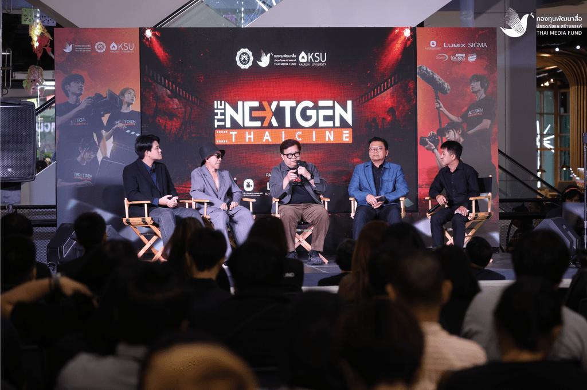
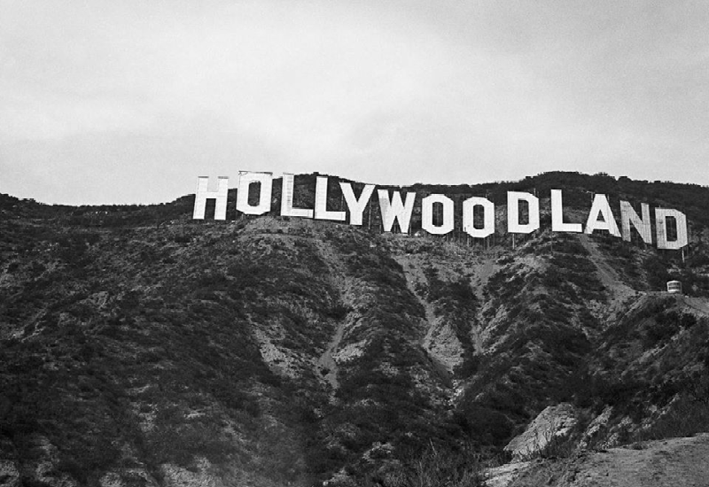
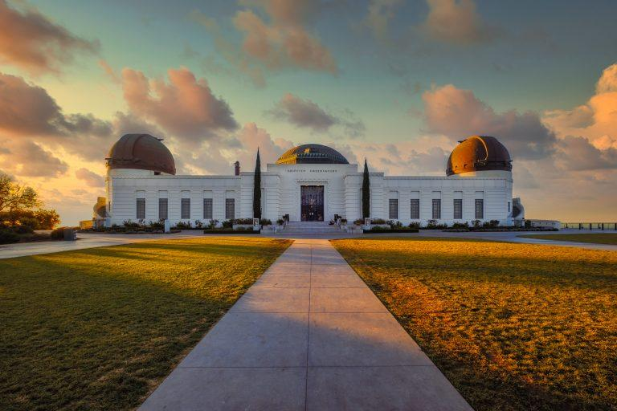

สื่อการเรียนรู้สื่อภาพยนตร์
ยินดีต้อนรับสู่แหล่งเรียนรู้สำหรับผู้สนใจสร้างและวิเคราะห์สื่อภาพยนตร์
.jpg)
.jpg)
ภาพประกอบ
กองทุนพัฒนาสื่อปลอดภัยและสร้างสรรค์
ภาพยนตร์แนะนำ
ชมตัวอย่างภาพยนตร์ในปี 2029
ตัวอย่างวิดีโอที่ช่วยให้เห็นภาพตัวอย่างภาพยนตร์ที่ถูกสร้างจาก Christopher Edward Nolan ขั้นตอนการวางแผน ตัดต่อ และถ่ายทำในสไตล์ของ Christopher Edward Nolan
แนะนำเนื้อเรื่องสั้น: THE ODDYSEY
หลังสงครามกรุงทรอย โอดิสซีอุสต้องเดินทางกลับบ้านที่เกาะอิธากา แต่ต้องเผชิญอุปสรรคและสัตว์ประหลาดในตำนานมากมาย เช่น ไซคลอปส์ ไซเรน และเทพเจ้าต่าง ๆการเดินทางอันยาวนานจึงกลายเป็นบททดสอบทั้งความกล้าหาญ สติปัญญา และความมุ่งมั่นที่จะกลับไปหาครอบครัว
- กำหนดฉายในประเทศไทย: 16 กรกฎาคม 2569 (2026)
- โรงภาพยนตร์: เข้าฉายในโรงภาพยนตร์หลายเครือ โดยมีทั้ง Major Cineplex และ SF Cinema และมีรอบในระบบ IMAX
กดเล่นเพื่อดูเทคนิคและการสร้างสื่อภาพยนตร์ในรูปแบบที่ของ Christopher Edward Nolan
กรุณาเลือกเมนู
เลือกหัวข้อที่ต้องการเพื่อดูบทเรียน ตัวอย่าง และแหล่งอ้างอิงที่เกี่ยวข้อง
ภาพประกอบ

THE NEXTGEN THAICINE
ความรู้พื้นฐานเกี่ยวกับสื่อภาพยนตร์
หัวข้อนี้จะพาคุณไล่เรียงตั้งแต่ประวัติศาสตร์ แนวภาพยนตร์ จนถึงองค์ประกอบสำคัญของการสร้างหนัง
การวางแผนและเตรียมการสร้างภาพยนตร์
เนื้อหานี้ครอบคลุมตั้งแต่การปั้นไอเดีย การเขียนบท ไปจนถึงการเตรียมสตาฟและงบประมาณ
เทคนิคการถ่ายทำภาพยนตร์
เรียนรู้เทคนิคเชิงปฏิบัติ เช่น การเลือกกล้อง มุมภาพ การจัดแสง และการบันทึกเสียง
การตัดต่อและผลิตสื่อภาพยนตร์
หัวข้อนี้อธิบายกระบวนการหลังการถ่ายทำ: ตัดต่อ ทำสี ออกแบบเสียง และ VFX
การประยุกต์ใช้และการประเมินผลสื่อภาพยนตร์
แนะนำการนำผลงานไปใช้จริง การตลาด การประเมินผล และการวัดผลสำเร็จ
ประวัติความเป็นมาของภาพยนตร์
นี่คือเนื้อหาแบบยาวที่อธิบายเกี่ยวกับประวัติความเป็นมาของภาพยนตร์ เริ่มต้นตั้งแต่ปลายศตวรรษที่ 19 เมื่อพี่น้องลูมิแอร์ (Lumière Brothers) ได้ประดิษฐ์เครื่องฉายภาพยนตร์และจัดงานฉายภาพยนตร์สู่สาธารณชนเป็นครั้งแรกในกรุงปารีส ประเทศฝรั่งเศส ภาพยนตร์ในยุคแรกนั้นเป็นภาพยนตร์เงียบ ไม่มีเสียงประกอบ และมีลักษณะเป็นภาพขาวดำที่บันทึกเหตุการณ์สั้นๆ ในชีวิตประจำวัน
- 1895 — การฉายภาพยนตร์สาธารณะครั้งแรกโดยพี่น้องลูมิแอร์
- 1927 — ยุคของภาพยนตร์มีเสียงเต็มตัว (The Jazz Singer)
- 1930s–1950s — ระบบสีและฮอลลีวูดเฟื่องฟู
- 1970s–2000s — การเติบโตของสตูดิโอและเทคโนโลยีดิจิทัล
ตัวอย่าง: พี่น้องลูมิแอร์, ชาร์ลี แชปลิน, อัลเฟรด ฮิทช์ค็อก, สแตนลีย์ คูบริก — ผู้มีบทบาทเปลี่ยนทิศทางและเทคนิคการเล่าเรื่องภาพยนตร์

ต่อมาเทคโนโลยีได้พัฒนาขึ้นอย่างรวดเร็ว มีการนำเทคนิคการตัดต่อและการเล่าเรื่องเข้ามาใช้ ทำให้ภาพยนตร์เปลี่ยนสภาพจากเพียงแค่การบันทึกภาพเคลื่อนไหว กลายมาเป็นศตวรรษแห่งการเล่าเรื่องราวที่ซับซ้อน จนเกิดเป็นอุตสาหกรรมฮอลลีวูดในสหรัฐอเมริกา และมีการนำระบบเสียงและระบบสีเข้ามาใช้ในเวลาต่อมา ทำให้ภาพยนตร์กลายเป็นสื่อบันเทิงที่ทรงอิทธิพลมากที่สุดในโลก
คลิกเพื่อดูวิดิโอตัวอย่างบน YOUTUBEประเภทของภาพยนตร์ (Genres)
ภาพยนตร์ในโลกนี้ถูกแบ่งออกเป็นหลากหลายประเภทหรือที่เรียกว่า "แนวภาพยนตร์" (Genre) เพื่อช่วยให้ผู้ขมสามารถเลือกเสพผลงานตามความชอบของตนเองได้ง่ายขึ้น แนวหลักๆ ที่เราพบเห็นได้ทั่วไป ได้แก่ ภาพยนตร์แนวแอ็กชัน (Action) ที่เน้นความตื่นเต้นและการต่อสู้, แนวระทึกขวัญ/สยองขวัญ (Thriller/Horror) ที่มุ่งสร้างความหวาดกลัวและลุ้นระทึก
นอกจากนี้ยังมีแนวชีวิตหรือดราม่า (Drama) ที่เจาะลึกอารมณ์ความสัมพันธ์ของมนุษย์, แนวตลกขบขัน (Comedy) ที่สร้างเสียงหัวเราะ และแนววิทยาศาสตร์ (Sci-Fi) ที่ตั้งคำถามถึงอนาคตและเทคโนโลยีอันล้ำสมัย ซึ่งการเข้าใจประเภทของภาพยนตร์จะช่วยให้คนทำหนังสามารถวางทิศทางและโครงสร้างบทได้อย่างแม่นยำตรงกลุ่มเป้าหมาย
- Action: เน้นฉากแอ็กชัน เหมาะกับผู้ชมที่ชอบจังหวะเร็ว
- Drama: เน้นการแสดงและความสัมพันธ์ของตัวละคร
- Comedy: ใช้อารมณ์ขันและสถานการณ์เพื่อสร้างความบันเทิง
- Sci-Fi: สำรวจไอเดียทางวิทยาศาสตร์และเทคโนโลยี
- Documentary: ถ่ายทอดข้อเท็จจริงและประเด็นเชิงวิชาการ
องค์ประกอบของภาพยนตร์
องค์ประกอบภาพยนตร์มี 5 ส่วนสำคัญที่ต้องทำงานร่วมกันอย่างลงตัว:
1.บทภาพยนตร์ (Screenplay): กระดูกสันหลังของเรื่อง ทั้งโครงเรื่อง ตัวละคร และบทสนทนา
บทที่ดีต้องมีล็อกไลน์ที่ชัดเจน โครงสร้างสามองก์ และความขัดแย้งที่ผลักดันตัวเอก
- ล็อกไลน์สั้น กระชับ: ใคร ทำอะไร เพื่ออะไร
- ตัวละครต้องมีเป้าหมายและอุปสรรค
- ซับเท็กซ์ช่วยเพิ่มมิติให้งานเขียน
2.การจัดวางในฉาก (Mise-en-Scène): ทุกสิ่งที่อยู่หน้ากล้อง เช่น ฉาก เสื้อผ้า หน้าผม และการจัดแสง
- คอมโพสิชัน: จัดวางวัตถุและตัวละครให้อ่านภาพง่าย
- โทนสีและเสื้อผ้า: สื่ออารมณ์และตัวตนตัวละคร
- พรอพส์: เลือกของที่เสริมเรื่อง ไม่รบกวนสายตา
3.งานกำกับภาพ (Cinematography): วิธีการจับภาพ ทั้งขนาดภาพ มุมกล้อง และการเคลื่อนกล้อง
- เลือกขนาดภาพเพื่อเล่าเรื่อง (เช่น CU สำหรับอารมณ์)
- ใช้มุมกล้องเป็นภาษาทางภาพสื่ออารมณ์
- การเคลื่อนกล้องช่วยสร้างพลังและจังหวะ
4.การตัดต่อ (Editing): การร้อยเรียงภาพและจัดจังหวะ (Pacing) เพื่อเล่าเรื่องให้ลื่นไหลหรือเร้าอารมณ์
- รักษาจังหวะ: อย่าให้ฉากยืดเยื้อเกินจำเป็น
- ใช้คัทเพื่อเน้นความสำคัญของภาพ
- การตัดต่อเสียงสำคัญเท่าภาพ
5.เสียง (Sound): ทั้งเสียงพูด ดนตรีประกอบ และเอฟเฟกต์ เพื่อควบคุมบรรยากาศและอารมณ์คนดู
- เสียงหน้าเซ็ตสำคัญ — เก็บ Room Tone
- ดนตรีช่วยขับอารมณ์ แต่ต้องไม่กลบเสียงพูด
- เอฟเฟกต์ช่วยเพิ่มความสมจริงและน้ำหนัก
อิทธิพลของภาพยนตร์ต่อสังคม
1.การขับเคลื่อนสังคม:
ช่วยสร้างความตระหนักรู้ในประเด็นที่ถูกมองข้าม เช่น ความเท่าเทียมทางเพศ หรือการเหยียดสีผิว และในบางกรณี เช่น ภาพยนตร์เกาหลีเรื่อง *Silenced* ก็สามารถกดดันให้เกิดการปฏิรูปกฎหมายในชีวิตจริงได้
เป็นเครื่องมือส่งออกวัฒนธรรม แฟชั่น และวิถีชีวิต ที่ช่วยกระตุ้นเศรษฐกิจและการท่องเที่ยวได้อย่างมหาศาล เช่น กระแสการท่องเที่ยวตามรอยสถานที่ถ่ายทำ หรือการบริโภคอาหารตามตัวละคร
ในแง่บวกสามารถสร้างแรงบันดาลใจและให้ความบันเทิง แต่ในแง่ลบอาจก่อให้เกิด "พฤติกรรมเลียนแบบ" (Copycat) ความรุนแรงได้ หากผู้ชมขาดวิจารณญาณ
สรุปได้ว่า
ภาพยนตร์และสังคมต่างทรงอิทธิพลต่อกันและกัน โดยหนังหยิบยกเรื่องราวจากสังคมมาเล่า และสังคมก็ปรับเปลี่ยนทัศนคติตามสิ่งที่ได้รับชม
บทบาทของภาพยนตร์ในยุคดิจิทัล
บทบาทของภาพยนตร์ในยุคดิจิทัลมีการเปลี่ยนแปลงอย่างมาก เนื่องจากความก้าวหน้าของเทคโนโลยีและอินเทอร์เน็ต ส่งผลต่อทั้งการผลิต การเผยแพร่ และการรับชมภาพยนตร์ ดังนี้
1.ความบันเทิงที่เข้าถึงได้ง่าย
ผู้ชมสามารถรับชมภาพยนตร์ได้ทุกที่ทุกเวลาผ่านแพลตฟอร์มสตรีมมิงบนสมาร์ตโฟน แท็บเล็ต หรือคอมพิวเตอร์ ทำให้การเข้าถึงภาพยนตร์สะดวกกว่ายุคที่ผ่านมา
2.สื่อในการสื่อสารและถ่ายทอดวัฒนธรรมภาพยนตร์เป็นเครื่องมือในการนำเสนอวิถีชีวิต ประเพณี ค่านิยม และวัฒนธรรมของแต่ละประเทศ ช่วยให้ผู้ชมจากทั่วโลกเข้าใจและแลกเปลี่ยนมุมมองระหว่างกัน
3.แหล่งความรู้และการเรียนรู้ภาพยนตร์สารคดีและภาพยนตร์ที่สร้างจากเหตุการณ์จริงสามารถให้ความรู้เกี่ยวกับประวัติศาสตร์ วิทยาศาสตร์ สังคม และประเด็นร่วมสมัย ช่วยส่งเสริมการเรียนรู้นอกห้องเรียน
4.กระตุ้นเศรษฐกิจและอุตสาหกรรมสร้างสรรค์เทคโนโลยีดิจิทัลช่วยลดต้นทุนการผลิต เปิดโอกาสให้ผู้สร้างภาพยนตร์อิสระเผยแพร่ผลงานสู่ผู้ชมทั่วโลก และสร้างรายได้ผ่านช่องทางออนไลน์
5.สร้างอิทธิพลต่อสังคมและความคิดเห็นภาพยนตร์สามารถสะท้อนปัญหาสังคม กระตุ้นการตระหนักรู้ และสร้างแรงบันดาลใจให้เกิดการเปลี่ยนแปลงในประเด็นต่าง ๆ เช่น สิทธิมนุษยชน สิ่งแวดล้อม และความเท่าเทียม
6.ส่งเสริมการมีส่วนร่วมของผู้ชมผู้ชมสามารถแสดงความคิดเห็น รีวิว หรือแบ่งปันเนื้อหาผ่านสื่อสังคมออนไลน์ ทำให้เกิดการแลกเปลี่ยนความคิดเห็นและสร้างชุมชนของผู้ที่สนใจภาพยนตร์
คำเตือน: วิดีโอนี้อาจมีเนื้อหาเกี่ยวกับความรุนแรง ความตึงเครียด หรือสถานการณ์ที่ไม่เหมาะสำหรับผู้ชมบางวัย จึงควรรับชมด้วยความระมัดระวัง
เปิดวิดีโอใน YouTubeโดยสรุปภาพยนตร์ในยุคดิจิทัลไม่ได้ทำหน้าที่เป็นเพียงสื่อบันเทิงเท่านั้น แต่ยังเป็นเครื่องมือสำคัญในการให้ความรู้ ถ่ายทอดวัฒนธรรม สร้างอิทธิพลต่อสังคม และขับเคลื่อนเศรษฐกิจสร้างสรรค์ ผ่านเทคโนโลยีที่ช่วยให้ผู้คนเข้าถึงและมีส่วนร่วมกับภาพยนตร์ได้อย่างกว้างขวางและสะดวกยิ่งขึ้น
การพัฒนาไอเดียและโครงเรื่อง

การพัฒนาไอเดียและโครงเรื่องเริ่มต้นจากการจุดประกายความคิดเล็ก ๆ รอบตัวผ่านการตั้งคำถามว่า "จะเกิดอะไรขึ้นถ้า..." เพื่อสร้างสถานการณ์ที่แปลกใหม่และน่าสนใจ จากนั้นจึงนำประกายความคิดนั้นมาบีบอัดให้เหลือเพียงประโยคสั้น ๆ หรือที่เรียกว่า ล็อกไลน์ (Logline) ซึ่งจะต้องระบุให้ชัดเจนว่าใครคือตัวเอก เกิดเหตุการณ์จุดชนวนอะไรขึ้น เป้าหมายของพวกเขาคืออะไร และต้องเผชิญกับอุปสรรคสำคัญชิ้นไหน เพื่อเป็นเข็มทิศนำทางไม่ให้เรื่องราวหลุดทิศทางไปไหนไกลเมื่อได้แกนหลักของเรื่องแล้ว ขั้นตอนต่อไปคือการนำมาวางลงบนโครงสร้างสามองก์ ซึ่งเปรียบเสมือนกระดูกสันหลังของภาพยนตร์ โดยเริ่มจากการปูเรื่องเพื่อแนะนำตัวละครและโลกของพวกเขาก่อนจะโยนปัญหาเข้าไป จากนั้นจึงเข้าสู่ช่วงที่ยาวที่สุดคือการให้ตัวเอกออกเดินทางเผชิญหน้ากับอุปสรรคที่ทวีความรุนแรงขึ้นเรื่อย ๆ มีจุดพลิกผันกลางเรื่อง และจุดตกต่ำที่สุดที่ทำให้ตัวเอกเกือบถอดใจ ก่อนจะนำไปสู่จุดวิกฤตสูงสุดหรือไคลแมกซ์ที่ปมทุกอย่างคลี่คลายลง และในท้ายที่สุด เรื่องราวทั้งหมดจะถูกนำมาขยายความผ่านการเขียนเป็นทรีตเมนต์ (Treatment) หรือเรื่องย่อแบบละเอียด เพื่อตรวจเช็กจังหวะการเล่าเรื่องให้มีความกระชับ น่าติดตาม และสมเหตุสมผล ก่อนจะเริ่มลงมือเขียนบทภาพยนตร์ฉบับเต็มต่อไป
คลิกเพื่อดูวิดีโอตัวอย่างบน YouTubeการเขียนบทภาพยนตร์
สิ่งสำคัญที่ช่วยขับเคลื่อนให้ตัวอักษรบนหน้ากระดาษกลายเป็นภาพที่มีชีวิตขึ้นมาได้ คือการเข้าใจองค์ประกอบเชิงลึกของการสร้างสถานการณ์และมิติของตัวละคร ซึ่งนักเขียนบทจะต้องทำงานร่วมกับสิ่งที่เรียกว่า "ความขัดแย้ง" (Conflict) ในทุก ๆ ฉาก เพราะหากฉากใดไม่มีความขัดแย้ง ฉากนั้นจะทำให้ภาพยนตร์หยุดนิ่งและน่าเบื่อทันที ความขัดแย้งนี้สามารถเกิดขึ้นได้ทั้งจากภายนอก เช่น อุปสรรคจากธรรมชาติ ตัวร้าย หรือสถานการณ์บีบคั้น และความขัดแย้งจากภายในจิตใจของตัวละครเอง เช่น ความกลัว ความโลภ หรือปมขัดแย้งในอดีตที่ยังไม่ได้รับการแก้ไข ซึ่งสิ่งเหล่านี้จะถูกแสดงออกผ่านพฤติกรรมและการตัดสินใจของตัวละครภายใต้สถานการณ์ที่กดดัน ยิ่งสถานการณ์บีบคั้นมากเท่าไหร่ ธาตุแท้ของตัวละครก็จะยิ่งเปิดเผยออกมาให้ผู้ชมเห็นชัดเจนขึ้นเท่านั้นนอกจากนี้ การออกแบบบทสนทนาก็มีความสำคัญไม่แพ้กัน บทสนทนาในภาพยนตร์ที่ดีจะต้องทำหน้าที่มากกว่าแค่การพูดคุยทั่วไปในชีวิตประจำวัน แต่ต้องทำหน้าที่ซ่อนความหมายแฝง หรือที่เรียกว่า "ซับเทกซ์" (Subtext) ซึ่งหมายถึงสิ่งที่ตัวละครคิดแต่ไม่ได้พูดออกมาตรง ๆ ทำให้ผู้ชมต้องคอยสังเกตและตีความจากน้ำเสียง สายตา หรือท่าทาง ซึ่งช่วยเพิ่มความลึกและความน่าติดตามให้กับเรื่องราว การฝึกฝนเขียนบทภาพยนตร์จึงต้องอาศัยการสังเกตพฤติกรรมของมนุษย์อย่างละเอียด เพื่อนำมาถ่ายทอดลงสู่หน้ากระดาษได้อย่างสมจริง และเมื่อกระบวนการเขียนร่างแรกเสร็จสิ้นลง การเข้าสู่ขั้นตอนการแก้ไขบทหรือการเกลาซ้ำ ๆ จะเป็นตัวคัดกรองให้บทภาพยนตร์มีความกระชับ มีจังหวะการเล่าเรื่องที่แม่นยำ และพร้อมที่จะถูกส่งต่อเปรียบเสมือนพิมพ์เขียวที่สมบูรณ์แบบสำหรับผู้กำกับและทีมงานในขั้นตอนการถ่ายทำต่อไป
การเขียนสตอรี่บอร์ด
คือขั้นตอนการเปลี่ยนบทภาพยนตร์ที่เป็นตัวอักษรให้กลายเป็นภาพวาดลายเส้นเรียงต่อกันตามลำดับฉาก เพื่อจำลองภาพภาพยนตร์ที่จะเกิดขึ้นจริงก่อนจะเริ่มการถ่ายทำจริง สตอรี่บอร์ดจึงทำหน้าที่เสมือนเป็นสะพานเชื่อมระหว่างจินตนาการของคนเขียนบทและผู้กำกับไปสู่ทีมงานฝ่ายผลิตทั้งหมด ทั้งตากล้อง ฝ่ายจัดแสง ฝ่ายศิลป์ และนักแสดง ให้เห็นภาพตรงกันอย่างเป็นรูปธรรม ซึ่งช่วยลดความผิดพลาด ความสับสน และช่วยประหยัดเวลาและงบประมาณในการถ่ายทำได้อย่างมหาศาล เพราะทีมงานจะรู้ล่วงหน้าทันทีว่าในแต่ละฉากจะต้องตั้งกล้องมุมไหน ใช้นักแสดงกี่คน และต้องเตรียมอุปกรณ์อะไรบ้างองค์ประกอบสำคัญในช่องสตอรี่บอร์ดแต่ละช่องจะไม่ได้มีเพียงแค่ภาพวาดเท่านั้น แต่จะประกอบไปด้วยรายละเอียดทางเทคนิคของภาพยนตร์อย่างครบถ้วน เริ่มต้นจาก "ภาพวาด" ที่ไม่จำเป็นต้องสวยงามเป็นงานศิลปะชั้นเลิศ แต่ต้องสื่อสารชัดเจนว่าใครกำลังทำอะไร อยู่ที่ไหน และมีองค์ประกอบใดอยู่ในฉากบ้าง ถัดมาคือการกำหนด "ขนาดภาพ" (Shot Size) เช่น ภาพกว้างมากเพื่อแสดงสถานที่ ภาพระยะปานกลางเพื่อเน้นการกระทำ หรือภาพใกล้เพื่อเน้นอารมณ์ใบหน้าของตัวละคร ควบคู่ไปกับการระบุ "มุมกล้อง" (Camera Angle) เช่น มุมต่ำเพื่อเพิ่มความทรงพลัง หรือมุมสูงเพื่อแสดงความอ่อนแอ และที่ขาดไม่ได้คือการระบุ "การเคลื่อนที่ของกล้อง" (Camera Movement) เช่น การแพน การทิลต์ หรือการดอลลี่ โดยมักจะใช้ลูกศรเป็นสัญลักษณ์บ่งบอกทิศทางของการเคลื่อนที่ภายในภาพ นอกจากนี้ที่ด้านล่างของแต่ละช่องภาพ จะต้องมีการเขียนกำกับหมายเลขฉาก บทสนทนาสั้น ๆ เสียงเอฟเฟกต์ที่เกิดขึ้น หรือดนตรีประกอบประกอบไว้เสมอ เพื่อให้ลำดับการเล่าเรื่องมีความต่อเนื่องและชัดเจนที่สุดกระบวนการทำสตอรี่บอร์ดจะเริ่มต้นหลังจากที่บทภาพยนตร์นิ่งแล้ว โดยผู้กำกับและผู้กำกับภาพจะร่วมกันวางแผนการแบ่งฉากออกเป็นช็อตย่อย ๆ จากนั้นผู้เขียนสตอรี่บอร์ดจะเริ่มวาดภาพร่างหยาบ ๆ เพื่อดูจังหวะการตัดต่อและการร้อยเรียงเรื่องราวว่าลื่นไหลและเข้าใจง่ายหรือไม่ หากพบว่ามุมกล้องไหนดูน่าเบื่อหรือการเล่าเรื่องติดขัด ก็จะทำการปรับแก้และสลับตำแหน่งช่องภาพในขั้นตอนนี้ทันที จนกระทั่งได้สตอรี่บอร์ดฉบับสมบูรณ์ที่พร้อมใช้งาน ในปัจจุบันนอกจากการวาดลงบนกระดาษแบบดั้งเดิมแล้ว เทคโนโลยีดิจิทัลยังเข้ามามีบทบาทอย่างมาก มีการใช้โปรแกรมและแอปพลิเคชันเฉพาะทาง รวมถึงการสร้างแบบจำลองสามมิติเคลื่อนไหวได้หรือที่เรียกว่า แอนิเมติกส์ (Animatics) ซึ่งช่วยให้ผู้กำกับสามารถใส่เสียงประกอบประกอบชั่วคราวเพื่อตรวจเช็กเวลาและจังหวะของภาพยนตร์ล่วงหน้าได้อย่างแม่นยำยิ่งขึ้น ก่อนที่จะนำพิมพ์เขียวทางภาพชิ้นนี้เข้าสู่กระบวนการถ่ายทำจริงในกองถ่ายต่อไป
คลิกเพื่อดูวิดีโอตัวอย่างบน YouTubeการคัดเลือกนักแสดงและทีมงาน
คือขั้นตอนสำคัญในกระบวนการเตรียมงานสร้าง (Pre-production) ที่เป็นการรวบรวมทรัพยากรบุคคลผู้ที่จะมาร่วมกันเนรมิตตัวอักษรจากบทภาพยนตร์และภาพจากสตอรี่บอร์ดให้กลายเป็นความจริง หากเปรียบภาพยนตร์เป็นการทำอาหาร ขั้นตอนนี้คือการเฟ้นหาวัตถุดิบที่ดีที่สุดและพ่อครัวที่มีฝีมือตรงกับประเภทอาหารที่จะทำ เพราะต่อให้บทภาพยนตร์จะดีเยี่ยมเพียงใด แต่หากได้นักแสดงที่ไม่เข้าถึงบทบาท หรือได้ทีมงานที่ไม่มีความเข้าใจในวิสัยทัศน์ของผู้กำกับ ภาพยนตร์เรื่องนั้นก็ยากที่จะประสบความสำเร็จ การเลือกผู้ร่วมงานที่ถูกต้องจึงเป็นหลักประกันสำคัญที่จะช่วยให้กระบวนการผลิตดำเนินไปได้อย่างราบรื่นและมีประสิทธิภาพสูงสุดในส่วนของการคัดเลือกนักแสดง (Casting) กระบวนการจะเริ่มต้นจากการที่ผู้กำกับ ผู้สร้าง และผู้กำกับฝ่ายคัดเลือกนักแสดง (Casting Director) ร่วมกันวิเคราะห์บทภาพยนตร์เพื่อสร้างข้อมูลลักษณะเฉพาะของตัวละคร (Character Profile) ทั้งในแง่ของรูปลักษณ์ภายนอก อายุ บุคลิกภาพ และมิติทางจิตใจ จากนั้นจึงเปิดรับสมัครและนัดหมายนักแสดงมาทำการทดสอบบทบาท (Audition) ซึ่งจะให้นักแสดงทดลองแสดงในฉากสำคัญจากบทภาพยนตร์ เพื่อดูความสามารถในการถ่ายทอดอารมณ์ ความเข้าใจในตัวละคร และความยืดหยุ่นในการปรับการแสดงตามคำสั่งของผู้กำกับ สิ่งสำคัญนอกเหนือจากความสามารถเฉพาะตัวคือ "เคมี" (Chemistry) ระหว่างนักแสดง ซึ่งมักจะมีการนัดหมายให้นักแสดงหลักมาทดสอบบทร่วมกัน (Chemistry Read) เพื่อดูว่าเมื่ออยู่ร่วมเฟรมกันแล้วมีความสมจริงและส่งเสริมการแสดงของกันและกันหรือไม่ รวมถึงการพิจารณาเรื่องความน่าดึงดูดทางการตลาด (Marketability) ในกรณีของภาพยนตร์ฟอร์มยักษ์ที่จำเป็นต้องใช้ดาราแม่เหล็กเพื่อช่วยในการดึงดูดผู้ชมและนายทุนสำหรับด้านการคัดเลือกทีมงาน (Crewing) จะเป็นการจัดตั้งโครงสร้างองค์กรที่แบ่งแยกหน้าที่และความรับผิดชอบอย่างชัดเจนตามสายงาน โดยตำแหน่งหลักที่ผู้กำกับและผู้อำนวยการสร้างต้องคัดเลือกเป็นอันดับแรก ๆ คือ ผู้กำกับภาพ (Director of Photography) ผู้ที่จะมาดูแลเรื่องการจัดแสงและมุมกล้อง, ผู้กำกับศิลป์ (Production Designer) ผู้รับผิดชอบงานสร้างฉากและโทนสีของภาพยนตร์, และผู้ควบคุมการตัดต่อ (Editor) ผู้ที่จะมาร้อยเรียงภาพในขั้นตอนสุดท้าย การคัดเลือกทีมงานจะพิจารณาจากผลงานในอดีต (Showreel/Portfolio) ประสบการณ์ที่ตรงกับแนวภาพยนตร์ (Genre) เช่น หากเป็นภาพยนตร์แอ็กชันก็ต้องการทีมงานผู้เชี่ยวชาญด้านเทคนิคพิเศษหรือผู้ออกแบบคิวบู๊โดยเฉพาะ และที่สำคัญที่สุดคือทัศนคติกับการทำงานร่วมกันเป็นทีม เนื่องจากกองถ่ายภาพยนตร์เป็นสถานที่ที่มีความกดดันสูง ทีมงานทุกคนจึงต้องมีความเป็นมืออาชีพ มีความสามารถในการแก้ไขปัญหาเฉพาะหน้า และมีวิสัยทัศน์ทางศิลปะที่สอดคล้องไปในทิศทางเดียวกับผู้กำกับ เพื่อให้ภาพยนตร์สำเร็จลุล่วงออกมาเป็นภาพเดียวกันในท้ายที่สุด
คลิกเพื่อดูวิดีโอตัวอย่างบน YouTubeการจัดหาทุนและการวางงบประมาณ
คือรากฐานที่สำคัญที่สุดในกระบวนการเตรียมงานสร้าง เพราะภาพยนตร์เป็นศิลปะที่ต้องใช้เม็ดเงินจำนวนมากในการขับเคลื่อน ขั้นตอนนี้จึงเป็นการผสมผสานระหว่างศาสตร์แห่งศิลปะและโลกแห่งธุรกิจภาพยนตร์เข้าด้วยกัน โดยผู้อำนวยการสร้าง (Producer) จะต้องรับบทบาทหลักในการบริหารจัดการเพื่อนำเงินทุนมาหล่อเลี้ยงโปรเจกต์ให้สามารถดำเนินงานได้จริง ตั้งแต่การเริ่มต้นเขียนบท การถ่ายทำ ไปจนถึงการทำการตลาดเพื่อนำภาพยนตร์เข้าฉาย หากปราศจากการวางแผนทางการเงินที่รัดกุมและแม่นยำ ภาพยนตร์ก็อาจประสบปัญหาเงินทุนหยุดชะงักกลางคันและไม่สามารถสร้างซ้ำจนเสร็จสมบูรณ์ได้ในส่วนของการจัดหาทุน (Film Financing) นักสร้างภาพยนตร์สามารถเข้าถึงแหล่งเงินทุนได้หลากหลายรูปแบบ ขึ้นอยู่กับขนาดและประเภทของภาพยนตร์ รูปแบบแรกคือ ทุนจากสตูดิโอหรือค่ายหนังใหญ่ (Studio Financing) ซึ่งค่ายจะเป็นผู้ออกค่าใช้จ่ายให้ทั้งหมดแต่แลกกับการควบคุมทิศทางภาพยนตร์และสิทธิ์ในผลกำไร รูปแบบต่อมาคือ ทุนจากนักลงทุนอิสระ (Private Equity) ซึ่งเป็นกลุ่มบุคคลหรือบริษัทที่ต้องการนำเงินมาลงทุนในธุรกิจบันเทิงเพื่อหวังผลตอบแทน นอกจากนี้ยังมี ทุนสนับสนุนจากรัฐบาลหรือองค์กรวัฒนธรรม (Grants & Subsidies) ที่มุ่งเน้นการส่งเสริมศิลปวัฒนธรรมหรือซอฟต์พาวเวอร์ของประเทศ ปัจจุบันยังมีวิธีการจัดหาทุนยุคใหม่ เช่น การระดมทุนจากมวลชน (Crowdfunding) ผ่านแพลตฟอร์มออนไลน์สำหรับภาพยนตร์อิสระ รวมถึง การขายสิทธิ์ล่วงหน้า (Pre-sales) โดยการนำบทภาพยนตร์และรายชื่อนักแสดงหลักไปเสนอขายสิทธิ์การจัดฉายให้กับผู้จัดจำหน่ายในต่างประเทศตามตลาดภาพยนตร์นานาชาติ เพื่อนำเงินมัดจำล่วงหน้ามาใช้เป็นทุนในการถ่ายทำสำหรับด้านการวางงบประมาณ (Film Budgeting) จะเป็นการคำนวณและกระจายค่าใช้จ่ายทุกอย่างออกเป็นหมวดหมู่ที่ละเอียดและชัดเจน โดยทั่วไปจะแบ่งโครงสร้างงบประมาณออกเป็น 4 ส่วนหลัก ส่วนแรกคือ งบประมาณเหนือกองถ่าย (Above-the-Line) ซึ่งเป็นค่าใช้จ่ายสำหรับบุคลากรหลักผู้สร้างสรรค์ ได้แก่ ค่าลิขสิทธิ์บทภาพยนตร์ ค่าตัวผู้กำกับ ผู้อำนวยการสร้าง และนักแสดงนำ ส่วนที่สองคือ งบประมาณในกองถ่าย (Below-the-Line) ซึ่งครอบคลุมค่าใช้จ่ายด้านเทคนิคและการปฏิบัติงานทั้งหมด เช่น ค่าแรงทีมงาน ค่าเช่ากล้องและอุปกรณ์ไฟ ค่าสร้างฉาก ค่าเสื้อผ้า ค่าอาหารและเครื่องดื่มในกองถ่าย รวมถึงค่าเดินทางและที่พัก ส่วนที่สามคือ งบประมาณหลังการผลิต (Post-Production) ซึ่งรวมถึงค่าตัดต่อ การทำเทคนิคพิเศษทางภาพ (Visual Effects) การแต่งเพลงประกอบ และการมิกซ์เสียง และส่วนสุดท้ายคือ งบประมาณสำรองและค่าดำเนินการ (Contingency & Insurance) ซึ่งมักจะตั้งสำรองไว้ประมาณร้อยละ 10 ของงบประมาณรวม เพื่อรองรับเหตุการณ์ไม่คาดฝัน เช่น สภาพอากาศไม่เป็นใจจนต้องเลื่อนวันถ่ายทำ หรืออาการเจ็บป่วยของนักแสดง โดยผู้อำนวยการสร้างจะต้องคอยควบคุมดูแลให้การใช้จ่ายในแต่ละวันเป็นไปตามแผนที่วางไว้อย่างเคร่งครัด เพื่อให้ภาพยนตร์สำเร็จลุล่วงได้ภายใต้กรอบวงเงินที่มีอยู่
คลิกเพื่อดูวิดีโอตัวอย่างบน YouTubeการเลือกใช้กล้องและเลนส์
ในงานภาพยนตร์ ตัวกล้องคือ "สมอง" ที่บันทึกข้อมูลภาพ สิ่งที่ต้องพิจารณาไม่ใช่แค่จำนวนพิกเซล แต่คือส่งเหล่านี้:Dynamic Range (ช่วงการรับแสง): กล้องภาพยนตร์ที่ดีต้องเก็บรายละเอียดได้ครบทั้งในมืดสะงัด (Shadow) และไฮไลท์ที่สว่างจัด (Highlight) เพื่อนำไป "เกรดสี" (Color Grading) ต่อได้ยืดหยุ่น กล้องมักรองรับการถ่ายแบบ Log Profiles หรือ RAW VideoRolling Shutter ต่ำ: เวลาแพนกล้องเร็วๆ ภาพต้องไม่ย้วยเป็นเจลลี่ระบบระบายความร้อน: กล้อง Cinema แท้ๆ จะมีพัดลมในตัว เพื่อให้สามารถเปิดบันทึกต่อเนื่องได้ยาวนานหลายชั่วโมงโดยที่กล้องไม่ตัดการทำงานการเชื่อมต่อ (I/O Ports): มีช่องต่อสายมาตรฐานโลก เช่น SDI สำหรับต่อจอมอนิเตอร์ผู้กำกับ และช่อง XLR สำหรับบันทึกเสียงคุณภาพสูง
การเลือกเลนส์ภาพยนตร์ (The Cinema Lens)ถ้ากล้องคือสมอง "เลนส์ก็คือหัวใจ" ในงานภาพยนตร์ เลนส์คือตัวกำหนดอารมณ์ของเรื่องราว ซึ่งปัจจุบันนิยมแบ่งเป็น 2 สไตล์ใหญ่ๆ ตามรสนิยมของผู้กำกับภาพ
Anamorphic Lens (เลนส์อนามอร์ฟิก)"มนต์เสน่ห์แห่งฮอลลีวูด"
เป็นเลนส์ที่บีบภาพแนวตั้งลงบนเซนเซอร์ ทำให้ได้ภาพที่ กว้างเป็นพิเศษ (Cinematic Widescreen) โดยไม่ต้องครอปทิ้ง จุดเด่นที่เป็นเอกลักษณ์คือ:
Bokeh:จะมีลักษณะเป็นวงรีแนวตั้ง ดูมีมิติแปลกตา

Lens Flare:
แสงไฟที่วิ่งตัดเลนส์จะเป็นเส้นแนวนอนสีน้ำเงินหรือสีทอง (Horizontal Flare) แบบที่เราเห็นในภาพยนตร์ไซไฟหรือแอคชั่นฟอร์มยักษ์

Dreamy:
มีความเป็นภาพยนตร์สูงมาก ให้อารมณ์: ยิ่งใหญ่, ฝันๆ

สรุปเซ็ตอัปตามประเภทของภาพยนตร์
ภาพยนตร์อินดี้ / ดราม่าเน้นอารมณ์คน (Character-Driven)
กล้อง: Mirrorless ระดับไฮเอนด์ที่มีโหมด Cinema (เช่น Sony FX3, Canon EOS R5 C, Lumix S1H)เลนส์: เลนส์ฟิกซ์ (Cine Prime) ระยะ 35mm หรือ 50mm ที่มีค่า กว้างๆ เพื่อละลายฉากหลัง แยกนักแสดงออกจากสภาพแวดล้อม และสร้างความรู้สึกใกล้ชิดกับตัวละคร
ภาพยนตร์แอคชั่น / ท่องเที่ยวแนว Cinematic VLOG*กล้อง: กล้อง Cinema ขนาดเล็กที่ติดตั้งบนกิมบอล (Gimbal) ได้ง่าย
*เลนส์: (เช่น 24-70mm หรือ 18-35mm) เพื่อความรวดเร็วในการเปลี่ยนขนาดภาพ (Close-up / Medium / Wide)
คลิกเพื่อดูวิดีโอตัวอย่างบน YouTubeขนาดภาพและมุมกล้อง
เห็นตัวละครเล็กมากเมื่อเทียบกับสภาพแวดล้อม ใช้แนะนำสถานที่หรือแสดงความโดดเดี่ยว
Long Shot (LS) / Full Shotเห็นตัวละครเต็มตัว
แสดงการเคลื่อนไหวและความสัมพันธ์กับฉาก
เห็นตั้งแต่เข่าขึ้นมา
นิยมในหนังคาวบอยและฉากสนทนา
เห็นตั้งแต่เอวขึ้นมา
ใช้บ่อยที่สุดในการสนทนา
เห็นตั้งแต่หน้าอกหรือไหล่ขึ้นมา
เน้นสีหน้าและอารมณ์มากขึ้น
เห็นเฉพาะใบหน้า
แสดงอารมณ์ ความรู้สึก และปฏิกิริยา
เจาะรายละเอียดเฉพาะจุด เช่น ดวงตา ปาก หรือวัตถุ
สร้างความตึงเครียดหรือเน้นความสำคัญ
กล้องอยู่ระดับสายตา ให้ความรู้สึกเป็นธรรมชาติและเป็นกลาง
High Angleกล้องอยู่สูงกว่าตัวละคร มองลงมา ทำให้ตัวละครดูอ่อนแอ เล็ก หรือถูกกดดัน
Low Angกล้องอยู่ต่ำกว่าตัวละคร มองขึ้นไป ทำให้ตัวละครดูมีอำนาจ น่าเกรงขาม หรือยิ่งใหญ่
Bird's Eye Viewมองจากด้านบนเกือบ 90 องศา เห็นภาพรวมของพื้นที่และการเคลื่อนไหว
Worm's Eye Viewมองจากพื้นขึ้นไป สร้างความรู้สึกอลังการและพลังอำนาจ
Dutch Angle (Canted Angle)กล้องเอียง สร้างความรู้สึกไม่มั่นคง สับสน หรืออันตราย
Over-the-Shoulder Shot (OTS)ถ่ายผ่านไหล่ของตัวละครอีกคน นิยมใช้ในฉากสนทนา
Point of View Shot (POV)มุมมองจากสายตาของตัวละคร ทำให้ผู้ชมรู้สึกเหมือนอยู่ในเหตุการณ์
ตัวอย่างการใช้ในฉากสนทนา
1.เริ่มด้วย Long Shot เพื่อให้เห็นสถานที่
2.ตัดเป็น Medium Shot ของตัวละครทั้งสอง
3.ใช้ Over-the-Shoulder Shot สลับกันระหว่างบทสนทนา
4.เมื่อมีอารมณ์สำคัญ ใช้ Close-Up
5.หากตัวละครรู้สึกถูกกดดัน อาจใช้ High Angle
6.หากตัวละครกำลังแสดงอำนาจ อาจใช้ Low Angle
เทคนิคการจัดแสงในกองถ่าย
เปรียบเสมือนการวาดภาพด้วยแสงสี ซึ่งไม่เพียงแต่ช่วยให้กล้องสามารถจับภาพได้อย่างคมชัดเท่านั้น แต่ยังเป็นเครื่องมือสำคัญในการเล่าเรื่อง สร้างบรรยากาศ และถ่ายทอดอารมณ์ของตัวละครให้ออกมาสมจริง โดยเทคนิคพื้นฐานและสำคัญที่คนทำงานเบื้องหลังนิยมใช้ มีดังนี้
1. การจัดแสงแบบ 3 จุด (Three-Point Lighting)นี่คือเทคนิคพื้นฐานที่เป็นหัวใจสำคัญของการจัดแสงทุกรูปแบบ เหมาะสำหรับการถ่ายสัมภาษณ์หรือจัดแสงให้ตัวละครหลัก ประกอบด้วยแสง 3 ตัวที่ทำหน้าที่ต่างกัน
Key Light (แสงหลัก)เป็นแสงที่สว่างที่สุดในฉาก มักวางทำมุม 45 องศากับตัวละครและกล้อง เพื่อกำหนดทิศทางของแสงหลักและทำให้เห็นมิติของใบหน้า
Fill Light (แสงลบเงา)แสงที่วางอยู่ฝั่งตรงข้ามกับแสงหลัก มีความเข้มข้นน้อยกว่า ทำหน้าที่ช่วยลดความมืดของเงาที่เกิดขึ้นจากแสงหลัก เพื่อไม่ให้หน้าของตัวละครดูดุดันหรือมีเงาที่เข้มจนเกินไป
Back Light / Hair Light (แสงแยกตัวแบบ)แสงที่ส่องมาจากด้านหลังของตัวละคร ทำหน้าที่สร้างเส้นขอบแสง (Rim Light) ช่วยแยกตัวละครออกจากฉากหลัง ทำให้ภาพดูมีมิติและไม่แบนราบ
2. การควบคุมความนุ่มนวลของแสง (Hard Light vs. Soft Light)
Hard Light (แสงแข็ง)
แสนที่พุ่งตรงมาจากแหล่งกำเนิดแสงขนาดเล็กหรืออยู่ไกล เช่น แสงแดดจัดกลางแจ้ง หรือไฟสปอตไลท์เปลือย ๆ แสงประเภทนี้จะให้เงาที่คมชัด คอนทราสต์สูง มักใช้เพื่อสร้างความรู้สึกกดดัน ดรามา ลึกลับ หรือแสดงถึงความสมบุกสมบัน
Soft Light (แสงนุ่ม)แสงที่ผ่านการกรองหรือกระจายแสง เช่น แสงในวันฟ้าครึ้ม หรือการใช้ Softbox และผ้ากรองแสง (Diffusion) แสงประเภทนี้จะเกลี่ยลงบนผิวอย่างนุ่มนวล เงาที่เกิดขึ้นจะฟุ้งกระจาย ละมุนตา นิยมใช้ในฉากโรแมนติก ฉากสนทนาทั่วไป หรือการถ่ายบิวตี้เพื่อช่วยพรางริ้วรอย
3. การใช้ทิศทางแสงเพื่อสื่ออารมณ์ (Lighting Direction) High-Key Lighting
การจัดแสงให้ทั่วทั้งฉากมีความสว่างไสว คอนทราสต์ต่ำ เงาจาง ๆ ให้ความรู้สึกสดใส ปลอดภัย มองโลกในแง่ดี มักพบในภาพยนตร์แนวคอมเมดี้ โรแมนติก หรือโฆษณา
Low-Key Lightingการจัดแสงที่เน้นความมืดเป็นหลัก มีคอนทราสต์สูงมาก แสงสว่างจะจับแค่บางส่วนของตัวละครและทิ้งส่วนใหญ่ไว้ในเงามืด ให้ความรู้สึกดรามา เขย่าขวัญ ทรงพลัง หรือน่าสงสัย มักใช้ในหนังแนวสืบสวนสอบสวน หรือฟิล์มนัวร์ (Film Noir)
Side Lightingการส่องแสงเข้าด้านข้างของตัวละครโดยตรง ทำให้หน้าด้านหนึ่งสว่างและอีกด้านหนึ่งมืด เทคนิคนี้ช่วยเน้นพื้นผิว (Texture) บนใบหน้า และสร้างมิติความขัดแย้งในจิตใจของตัวละครได้ดี
4. แสงเสมือนจริงในฉาก (Practical Lighting)
คือการใช้แหล่งกำเนิดแสงที่ปรากฏอยู่จริงในฉากเข้ามาช่วยส่องสว่าง เช่น โคมไฟตั้งโต๊ะ แสงจากหน้าจอคอมพิวเตอร์ เทียนไข หรือไฟถนน แม้ว่าในความเป็นจริง แสงเหล่านี้อาจจะสว่างไม่พอจนต้องใช้ไฟกองถ่ายช่วยเสริม (Motivated Lighting) แต่การเปิดไฟเหล่านี้ในฉากจะช่วยสร้างความสมจริงและทำให้ผู้ชมรู้สึกอินไปกับสถานที่นั้น ๆ ได้อย่างเป็นธรรมชาติ
การบันทึกเสียงหน้าเซ็ต
การบันทึกเสียงหน้าเซ็ตในการสร้างภาพยนตร์ เปรียบเสมือนการจับเบื้องหลังความเงียบเพื่อให้ได้ยินเสียงที่มีชีวิต แม้ว่าภาพยนตร์จะเป็นศิลปะที่โดดเด่นด้วยภาพแสงสีอันตระการตา แต่ปฏิเสธไม่ได้เลยว่าเสียงคืออีกครึ่งหนึ่งของจิตวิญญาณที่คอยขับเคลื่อนอารมณ์ความรู้สึกของผู้ชม บ่อยครั้งที่เรามักจะมองข้ามความสำคัญของเสียงหน้าเซ็ตไป จนกระทั่งได้ยินเสียงที่ขาดความชัดเจนหรือเต็มไปด้วยสิ่งรบกวน ซึ่งนั่นจะทำลายความสมจริงของภาพยนตร์ลงในทันที ดังนั้น หน้าที่ของทีมบันทึกเสียงหน้าเซ็ต หรือ Production Sound Team จึงไม่ใช่แค่การกดปุ่มบันทึกเสียงหรือการถือไมโครโฟนให้ใกล้ปากนักแสดงเท่านั้น แต่เป็นทั้งศาสตร์แห่งวิศวกรรม ศิลปะแห่งการฟัง และการบริหารจัดการภายใต้แรงกดดันมหาศาลของกองถ่ายภาพยนตร์
โครงสร้างของทีมเสียงหน้าเซ็ตทำงานประสานกันราวกับวงดนตรีขนาดเล็ก โดยมีผู้บันทึกเสียงหลัก หรือ Production Sound Mixer เป็นหัวหน้าทีมที่คอยควบคุมระดับเสียง ผสมสัญญาณ และประเมินคุณภาพเสียงในแต่ละเทคหน้ามิกเซอร์ ทำงานร่วมกับผู้ควบคุมไมค์บูม หรือ Boom Operator นักเต้นในเงามืดผู้มีหน้าที่ยื่นไมค์เข้าไปให้ใกล้ตัวนักแสดงมากที่สุดโดยไม่ให้หลุดเข้าไปในเฟรมภาพและไม่ให้เกิดเงาพาดผ่านฉาก และมีผู้ช่วยช่างเสียง หรือ Sound Utility คอยดูแลระบบสายสัญญาณรวมถึงการติดตั้งไมค์สายไร้สายขนาดจิ๋ว หรือ Lavalier ซ่อนไว้ใต้เสื้อผ้าของนักแสดง
เครื่องมือทำมาหากินของพวกเขาได้รับการเลือกสรรมาให้เหมาะกับสถานการณ์ที่คาดเดาไม่ได้ ไมโครโฟนทิศทางสูงหรือ Shotgun Microphone บนด้ามบูมจะทำหน้าที่จับเสียงพูดที่ให้มิติความเป็นธรรมชาติ ในขณะที่ไมค์ลาวาเลียร์จะช่วยเก็บเสียงพูดได้ชัดเจนในมุมกล้องที่กว้างมากๆ แม้จะขาดมิติความลึกไปบ้างก็ตาม โดยสัญญาณทั้งหมดจะถูกบันทึกแยกแทร็กอย่างละเอียดผ่านเครื่อง Multi-track Recorder เพื่อส่งต่อให้ทีมตัดต่อในขั้นต่อไป
อุปสรรคสำคัญที่คนทำเสียงต้องเผชิญอยู่ตลอดเวลาคือสิ่งแวดล้อมรอบตัว ไม่ว่าจะเป็นเสียงเครื่องปรับอากาศ เสียงการจราจร เสียงเสื้อผ้าเสียดสีกัน หรือแม้แต่ข้อจำกัดจากมุมกล้องและแสง ทีมเสียงจึงต้องแก้ไขปัญหาเฉพาะหน้าอยู่เสมอ เช่น การประสานงานกับแผนกคอสตูมเพื่อซ่อนไมค์ การขอเวลากองถ่ายเพื่อบันทึกเสียงความเงียบของห้อง หรือ Room Tone รวมถึงการอัดเสียงพูดเปล่าๆ หลังสั่งคัต เพื่อใช้เป็นฐานข้อมูลในการแต่งเสียง
หลายคนอาจเข้าใจผิดว่าหากเสียงหน้าเซ็ตมีปัญหาก็สามารถไปอัดเสียงพากย์ทับในสตูดิโอ หรือทำ ADR ทีหลังได้ แต่ในความเป็นจริงแล้ว อารมณ์สดที่เกิดขึ้นหน้ากล้อง ณ วินาทีนั้น ทั้งเสียงร้องไห้สะอึกสะอื้นหรือเสียงกระซิบด้วยความกลัว เป็นสิ่งที่ลอกเลียนแบบได้ยากมากในห้องอัดสี่เหลี่ยม การบันทึกเสียงหน้าเซ็ตจึงเป็นการรักษาคุณค่าทางอารมณ์ที่แท้จริงของนักแสดงเอาไว้
บทสรุปของการบันทึกเสียงหน้าเซ็ตจึงไม่ใช่แค่เรื่องของเทคนิคหรือคลื่นความถี่ แต่เป็นเรื่องของความเข้าใจในเรื่องราว ช่างเสียงที่ดีจะรู้ว่าเมื่อไหร่ควรเปิดรับเสียงบรรยากาศ และเมื่อไหร่ที่ต้องดึงเสียงกระซิบอันแผ่วเบาขึ้นมา เพื่อส่งต่ออารมณ์ที่สมบูรณ์แบบที่สุดไปถึงผู้ชม เพราะภาพยนตร์ที่ดีไม่ได้มีไว้แค่ให้เราดูด้วยตา แต่มีไว้ให้เราได้รู้สึกผ่านทุกมิติของเสียงที่ถูกบันทึกมาอย่างตั้งใจ
คลิกเพื่อดูวิดีโอตัวอย่างบน YouTube
การกำกับการแสดงในกองถ่าย
การบันทึกเสียงหน้าเซ็ตในการสร้างภาพยนตร์ เปรียบเสมือนการจับเบื้องหลังความเงียบเพื่อให้ได้ยินเสียงที่มีชีวิต แม้ว่าภาพยนตร์จะเป็นศิลปะที่โดดเด่นด้วยภาพแสงสีอันตระการตา แต่ปฏิเสธไม่ได้เลยว่าเสียงคืออีกครึ่งหนึ่งของจิตวิญญาณที่คอยขับเคลื่อนอารมณ์ความรู้สึกของผู้ชม บ่อยครั้งที่เรามักจะมองข้ามความสำคัญของเสียงหน้าเซ็ตไป จนกระทั่งได้ยินเสียงที่ขาดความชัดเจนหรือเต็มไปด้วยสิ่งรบกวน ซึ่งนั่นจะทำลายความสมจริงของภาพยนตร์ลงในทันที ดังนั้น หน้าที่ของทีมบันทึกเสียงหน้าเซ็ต หรือ Production Sound Team จึงไม่ใช่แค่การกดปุ่มบันทึกเสียงหรือการถือไมโครโฟนให้ใกล้ปากนักแสดงเท่านั้น แต่เป็นทั้งศาสตร์แห่งวิศวกรรม ศิลปะแห่งการฟัง และการบริหารจัดการภายใต้แรงกดดันมหาศาลของกองถ่ายภาพยนตร์
โครงสร้างของทีมเสียงหน้าเซ็ตทำงานประสานกันราวกับวงดนตรีขนาดเล็ก โดยมีผู้บันทึกเสียงหลัก หรือ Production Sound Mixer เป็นหัวหน้าทีมที่คอยควบคุมระดับเสียง ผสมสัญญาณ และประเมินคุณภาพเสียงในแต่ละเทคหน้ามิกเซอร์ ทำงานร่วมกับผู้ควบคุมไมค์บูม หรือ Boom Operator นักเต้นในเงามืดผู้มีหน้าที่ยื่นไมค์เข้าไปให้ใกล้ตัวนักแสดงมากที่สุดโดยไม่ให้หลุดเข้าไปในเฟรมภาพและไม่ให้เกิดเงาพาดผ่านฉาก และมีผู้ช่วยช่างเสียง หรือ Sound Utility คอยดูแลระบบสายสัญญาณรวมถึงการติดตั้งไมค์สายไร้สายขนาดจิ๋ว หรือ Lavalier ซ่อนไว้ใต้เสื้อผ้าของนักแสดง
เครื่องมือทำมาหากินของพวกเขาได้รับการเลือกสรรมาให้เหมาะกับสถานการณ์ที่คาดเดาไม่ได้ ไมโครโฟนทิศทางสูงหรือ Shotgun Microphone บนด้ามบูมจะทำหน้าที่จับเสียงพูดที่ให้มิติความเป็นธรรมชาติ ในขณะที่ไมค์ลาวาเลียร์จะช่วยเก็บเสียงพูดได้ชัดเจนในมุมกล้องที่กว้างมากๆ แม้จะขาดมิติความลึกไปบ้างก็ตาม โดยสัญญาณทั้งหมดจะถูกบันทึกแยกแทร็กอย่างละเอียดผ่านเครื่อง Multi-track Recorder เพื่อส่งต่อให้ทีมตัดต่อในขั้นต่อไป
อุปสรรคสำคัญที่คนทำเสียงต้องเผชิญอยู่ตลอดเวลาคือสิ่งแวดล้อมรอบตัว ไม่ว่าจะเป็นเสียงเครื่องปรับอากาศ เสียงการจราจร เสียงเสื้อผ้าเสียดสีกัน หรือแม้แต่ข้อจำกัดจากมุมกล้องและแสง ทีมเสียงจึงต้องแก้ไขปัญหาเฉพาะหน้าอยู่เสมอ เช่น การประสานงานกับแผนกคอสตูมเพื่อซ่อนไมค์ การขอเวลากองถ่ายเพื่อบันทึกเสียงความเงียบของห้อง หรือ Room Tone รวมถึงการอัดเสียงพูดเปล่าๆ หลังสั่งคัต เพื่อใช้เป็นฐานข้อมูลในการแต่งเสียง
หลายคนอาจเข้าใจผิดว่าหากเสียงหน้าเซ็ตมีปัญหาก็สามารถไปอัดเสียงพากย์ทับในสตูดิโอ หรือทำ ADR ทีหลังได้ แต่ในความเป็นจริงแล้ว อารมณ์สดที่เกิดขึ้นหน้ากล้อง ณ วินาทีนั้น ทั้งเสียงร้องไห้สะอึกสะอื้นหรือเสียงกระซิบด้วยความกลัว เป็นสิ่งที่ลอกเลียนแบบได้ยากมากในห้องอัดสี่เหลี่ยม การบันทึกเสียงหน้าเซ็ตจึงเป็นการรักษาคุณค่าทางอารมณ์ที่แท้จริงของนักแสดงเอาไว้
บทสรุปของการบันทึกเสียงหน้าเซ็ตจึงไม่ใช่แค่เรื่องของเทคนิคหรือคลื่นความถี่ แต่เป็นเรื่องของความเข้าใจในเรื่องราว ช่างเสียงที่ดีจะรู้ว่าเมื่อไหร่ควรเปิดรับเสียงบรรยากาศ และเมื่อไหร่ที่ต้องดึงเสียงกระซิบอันแผ่วเบาขึ้นมา เพื่อส่งต่ออารมณ์ที่สมบูรณ์แบบที่สุดไปถึงผู้ชม เพราะภาพยนตร์ที่ดีไม่ได้มีไว้แค่ให้เราดูด้วยตา แต่มีไว้ให้เราได้รู้สึกผ่านทุกมิติของเสียงที่ถูกบันทึกมาอย่างตั้งใจ
คลิกเพื่อดูวิดีโอตัวอย่าง บทที่ 1 บน YouTube
คลิกเพื่อดูวิดีโอตัวอย่าง บทที่ 2 บน YouTube
คลิกเพื่อดูวิดีโอตัวอย่าง บทที่ 3 บน YouTube
คลิกเพื่อดูวิดีโอตัวอย่าง บทที่ 4 บน YouTube
ซอฟต์แวร์และเครื่องมือที่ใช้ตัดต่อ
ภาพรวมสั้น ๆ: ซอฟต์แวร์และฮาร์ดแวร์ที่เหมาะสมช่วยให้กระบวนการตัดต่อมีประสิทธิภาพ ตั้งแต่การนำเข้าวิดีโอจนถึงการส่งออกไฟล์พร้อมฉาย
- เลือกโปรแกรมให้ตรงกับงาน: เช่น Adobe Premiere Pro, DaVinci Resolve, Final Cut Pro, Avid Media Composer
- เตรียมฮาร์ดแวร์: CPU/GPU แรงพอ, แรม 32GB+, SSD สำหรับงานวิดีโอ, จอคาลิเบต
- ตั้งค่าโปรเจ็กต์: ความละเอียด เฟรมเรท และโคเด็กให้ตรงกับไฟล์ต้นฉบับ (เช่น 1920x1080@24fps, 4K@24fps)
- นำเข้าและจัดระเบียบสื่อ: ตั้งโฟลเดอร์ Media/Audio/Graphics และใช้ Proxy เมื่อไฟล์ใหญ่
- เวิร์คโฟลว์การตัดต่อ: Assembly → Rough Cut → Fine Cut → Picture Lock
- ส่งไปทำสีและเสียง: Color Grade และ Audio Mix ก่อนสรุปไฟล์ Master
- ส่งออกและเช็คคุณภาพ: สร้างไฟล์ Master (ProRes/DNxHR) และไฟล์สำหรับแพลตฟอร์ม (H.264/H.265)
เคล็ดลับ: ใช้ Keyboard Shortcuts และ Templates เพื่อเพิ่มความเร็วในการทำงาน
ทฤษฎีและจังหวะการตัดต่อ
การตัดต่อเป็นเครื่องมือเชิงเล่าเรื่อง — จังหวะและคัทสร้างความหมาย
- ชนิดของคัทที่ใช้บ่อย: J-Cut (เสียงนำ), L-Cut (ภาพนำ), Match Cut, Jump Cut
- Assembly Cut: นำทุกช็อตมาจัดตามโครงเรื่องโดยไม่ตัดทอน
- Rough → Fine: ปรับจังหวะ ตัดความยาวช็อตเพื่อกระชับความหมาย
- ริทึม (Rhythm): ใช้ช็อตสั้น/ยาวควบคุมอารมณ์ — สั้นเพิ่มความตื่นเต้น ยาวสร้างอารมณ์นิ่ง
- Continuity: ตรวจทิศทางสายตา เสื้อผ้า และตำแหน่งวัตถุให้ต่อเนื่อง
- ทดสอบกับผู้ชม: ทำ preview และรับ feedback ก่อน Picture Lock
การทำสีและย้อมสีภาพ
ขั้นตอนปฏิบัติสำหรับงานทำสี (Color Correction → Color Grading)
- เตรียมไฟล์: เชื่อมต่อไฟล์ต้นฉบับ, ตั้ง Timeline ให้ตรงกับเฟรมเรทและโคเด็ก
- Color Correction เบื้องต้น: ปรับ Exposure, Contrast และ White Balance ให้สมดุล
- Matching: ใช้ Scopes (Waveform/Parade/Vectorscope) ให้ช็อตต่าง ๆ ต่อเนื่องกัน
- Creative Grade: ปรับ Curves, Primaries และใช้ LUTs เพื่อสร้างลุคของเรื่อง
- งานเฉพาะจุด: Power windows, tracking เพื่อแก้ไขเฉพาะบริเวณที่ต้องการ
- ตรวจบนจอคาลิเบต: ตรวจผลบนจอที่คาลิเบตและสภาพแสงจริงก่อนส่งมอบ
- ส่งออก: สร้าง Master (ProRes/DNxHR) และเวอร์ชันสำหรับแพลตฟอร์ม (H.264/H.265)
การออกแบบเสียงและดนตรีประกอบ
ขั้นตอนปฏิบัติในการออกแบบเสียงและทำดนตรีประกอบ
- เตรียมแทร็กต้นทาง: รวบรวม Production Audio และ Room Tone
- ทำความสะอาดเสียง: ใช้ De-noise/De-click เพื่อกำจัดเสียงรบกวน
- สร้าง Foley: บันทึกเสียงสัมผัส (ก้าวเดิน การสัมพันธ์วัตถุ)
- ออกแบบ SFX: สร้าง/เลือกเสียงประกอบให้เข้ากับเหตุการณ์
- คัดเลือก/แต่งดนตรี: เขียนสกอร์หรือเลือกเพลงที่เสริมอารมณ์ฉาก
- มิกซ์และมาสเตอร์: สมดุล Dialogue, Music, SFX และตรวจบนหลายระบบ
การสร้างสเปเชียลเอฟเฟกต์ (VFX)
ขั้นตอนปฏิบัติการทำ VFX (ย่อ):
- Pre-production: ทำ VFX breakdown และวางแผนถ่าย Plate (green/blue screen, tracking markers)
- On-set data: เก็บข้อมูลกล้อง, lens, HDRI และ reference lighting
- Tracking / Matchmove: ติดตามการเคลื่อนที่ของกล้อง/วัตถุ
- Modeling / Texturing / Simulation: สร้างโมเดล 3D, วัสดุ และ simulation ที่ต้องใช้
- Lighting & Rendering: ให้แสงและเรนเดอร์ให้แมตช์กับช็อตจริง
- Compositing: รวมเลเยอร์ ปรับสี ขจัดขอบ และใส่ grain ให้กลมกลืน
- QA & Delivery: ตรวจความถูกต้องและส่งไฟล์ Master พร้อม version สำรอง
การตลาดและการจัดจำหน่าย
เป็นขั้นตอนสำคัญที่ช่วยให้ภาพยนตร์สามารถเข้าถึงกลุ่มผู้ชมเป้าหมายและประสบความสำเร็จในเชิงธุรกิจ แม้ว่าภาพยนตร์จะมีเนื้อหาที่ดีและการผลิตที่มีคุณภาพสูงเพียงใด แต่หากขาดการประชาสัมพันธ์และการจัดจำหน่ายที่มีประสิทธิภาพ ก็อาจทำให้ผลงานไม่เป็นที่รู้จักและไม่สามารถสร้างรายได้ตามเป้าหมายที่กำหนดไว้ได้
- สื่อสังคมออนไลน์: teasers, behind-the-scenes, influencer collaboration
- เทศกาล/พรีเมียร์: สร้างชื่อเสียงและรีวิวจากสื่อ
- ประชาสัมพันธ์แบบเดิม: สื่อโทรทัศน์ วิทยุ และป้ายโฆษณา
- ความร่วมมือทางการศึกษา: จัดฉายสำหรับสถานศึกษาและเวิร์กชอป
- มีเทรลเลอร์และภาพโปสเตอร์คุณภาพสูง
- วางแผนเจาะกลุ่มเป้าหมายและช่องทางสื่อ
- เตรียมเอกสารสื่อ (press kit) และช่องทางติดต่อ
- กำหนดกำหนดการพรีเมียร์และรอบฉายล่วงหน้า
การส่งภาพยนตร์เข้าประกวด
การส่งภาพยนตร์เข้าประกวดไม่ได้มีเป้าหมายเพียงเพื่อคว้ารางวัลเท่านั้น แต่ยังเป็นเวทีแห่งการเรียนรู้ การแลกเปลี่ยนประสบการณ์ และการสร้างเครือข่ายกับผู้สร้างภาพยนตร์และผู้เชี่ยวชาญในวงการ อีกทั้งยังช่วยเปิดโอกาสให้ผลงานเป็นที่รู้จักในวงกว้างก่อนส่งผลงานเข้าประกวด
- สำรองไฟล์ความละเอียดสูงและไฟล์สำหรับฉาย (DCP/MP4)
- เตรียม Press Kit: Synopsis, Director's statement, Stills
- ตรวจสิทธิ์เพลงและลิขสิทธิ์ให้เรียบร้อย
เน้นเรื่องการเล่าเรื่องที่ชัดเจน ความคิดสร้างสรรค์ และความน่าเชื่อถือด้านเทคนิค
การใช้ภาพยนตร์เพื่อการศึกษา
ภาพยนตร์เป็นสื่อการเรียนรู้ที่ช่วยถ่ายทอดความรู้และประสบการณ์ได้อย่างมีประสิทธิภาพ เพราะสามารถนำเสนอเนื้อหาผ่านภาพ เสียง และเรื่องราวที่เข้าใจง่าย ทำให้ผู้เรียนเกิดความสนใจและเข้าใจบทเรียนได้ดียิ่งขึ้น
- เลือกตอนหรือฉากที่ตรงกับเป้าหมายการเรียนรู้
- เตรียมคำถามเชิงวิเคราะห์และแบบฝึกหัดหลังชม
- เชื่อมโยงกับกิจกรรมกลุ่มเพื่อการอภิปราย
การวิเคราะห์ตัวละคร, การเขียนรีวิวเชิงวิชาการ, การสร้างมิกซ์สื่อสั้นเพื่อสรุปบทเรียน